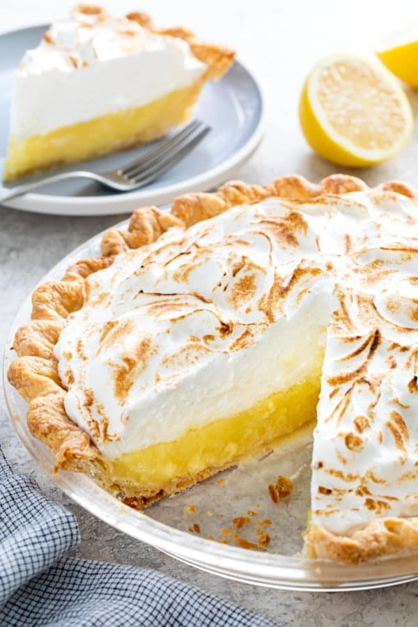
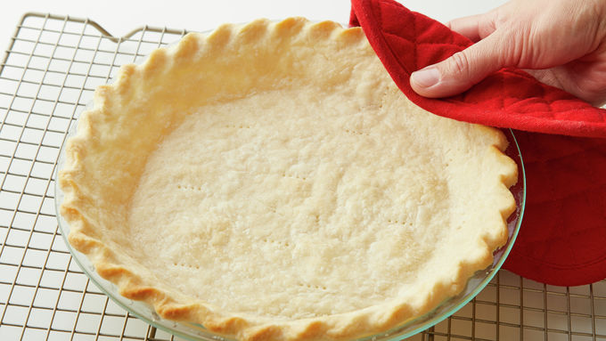
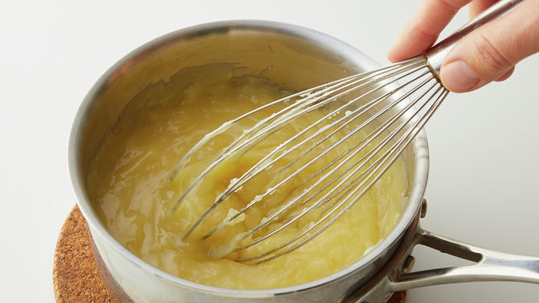
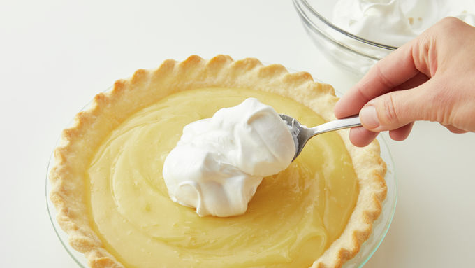

Lemon Meringue

Description
Want to know what sunshine tastes like? Then try this lemon meringue pie.
It’s bursting with fresh citrus flavor and a sweet, creamy meringue topping.
If you’re pressed for time, substitute Betty Crocker™ pie crust mix for the from-scratch pie crust.
Never made a lemon meringue pie recipe before? We've got your back with easy steps to help you master this dessert classic.
Ingredients
Pastry
- 1 cup Gold Medal™ all-purpose flour
- 1/2 teaspoon salt
- 1/3 cup shortening
- 3 to 4 tablespoons cold water
Filling
- 3 egg yolks
- 1 1/2 cups sugar
- 1/3 cup plus 1 tablespoon cornstarch
- 1 1/2 cups water
- 3 tablespoons butter
- 2 teaspoons grated lemon zest
- 1/2 cup lemon juice
Meringue
- 3 egg whites, room temperature
- 1/4 teaspoon cream of tartar
- 6 tablespoons sugar
- 1/2 teaspoon vanilla
Instructions
- In medium bowl, mix flour and salt. Cut in shortening, using pastry blender (or pulling 2 table knives through ingredients in opposite directions), until mixture forms coarse crumbs the size of small peas. Sprinkle with cold water, 1 tablespoon at a time, tossing with fork until flour mixture is moistened and can be pressed into a ball.
- Shape into flattened round on lightly floured surface. Wrap in plastic wrap; refrigerate about 45 minutes or until dough is cold.
- Heat oven to 450°F. With floured rolling pin, roll pastry on lightly floured surface into round 2 inches larger than upside-down 9-inch glass pie plate. Fold pastry into fourths; place in pie plate, or roll pastry loosely around rolling pin and transfer to pie plate. Unfold or unroll pastry and ease into plate, pressing firmly against bottom and side. Trim overhanging edge of pastry 1 inch from rim of pie plate. Fold and roll pastry under, even with plate; flute as desired. Prick bottom and side of pastry thoroughly with fork to prevent puffing. Bake 13 to 15 minutes or until light brown; cool on cooling rack.

- Reduce oven temperature to 350°F. In small bowl, beat egg yolks with fork. In 2-quart saucepan, mix 1 1/2 cups sugar and the cornstarch; gradually stir in 1 1/2 cups water. Cook over medium heat, stirring constantly, until mixture thickens and boils. Boil and stir 1 minute.
- Immediately stir with whisk at least half of hot mixture into egg yolks; stir back into hot mixture in saucepan. Return to boiling; boil and stir constantly 2 minutes; remove from heat. Stir in butter, lemon zest and lemon juice with whisk. Cover and keep warm.

- In medium bowl, beat egg whites and cream of tartar with electric mixer on high speed until foamy. Beat in sugar, 1 tablespoon at a time; scrape side of bowl occasionally. Continue beating until stiff, glossy peaks form and sugar is completely dissolved. Beat in vanilla. Pour hot lemon filling into baked pie shell. Immediately drop spoonfuls of meringue onto hot lemon filling, and carefully spread meringue to cover top completely, spreading to edge of crust to prevent shrinkage or weeping.

- Bake 20 to 25 minutes or until meringue is browned and temperature reaches 160°F. Cool on cooling rack 1 hour. Refrigerate about 4 hours or until filling is set. Store loosely covered in refrigerator.
Homepage